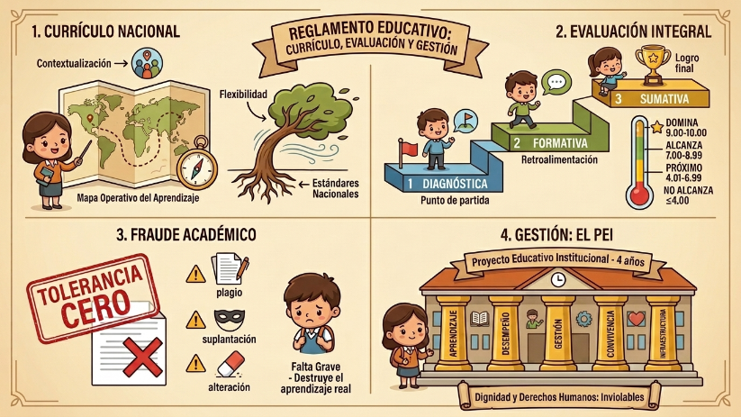

El reglamento (Art. 1) no es solo burocracia; es el instrumento que aterriza las leyes en las aulas. Un punto clave es el currículo nacional, que define las competencias y destrezas básicas que todo estudiante ecuatoriano debe alcanzar. Pero lo que lo hace "inteligente" es su capacidad de contextualización (adaptarse a las necesidades de la comunidad) y flexibilidad (ajustarse a las características específicas de cada colegio).

La Evaluación: Más allá de la nota
La evaluación (Art. 26 en adelante) cambió su enfoque tradicional. Ya no es una simple carrera por el 10/10; es un proceso continuo de valoración cualitativa y cuantitativa. Lo esencial aquí es la retroalimentación: el docente debe orientar al alumno para que alcance los mínimos necesarios.
La evaluación es diagnóstica (al inicio), formativa (durante el proceso) y sumativa (al final). Un dato importante: la descripción cualitativa del comportamiento nunca puede vulnerar los derechos humanos. ¡El respeto a la dignidad del estudiante es la regla número uno, incluso en el informe disciplinario!
Transparencia y Familia: Los informes de aprendizaje
Un punto que la ley recalca es el derecho a la información. Los tutores de curso están obligados a entregar informes de desempeño (parciales y finales) a los representantes legales. Estas reuniones no son opcionales; son espacios para que la familia sepa exactamente qué potencialidades está desarrollando su representado. Además, la normativa exige rigor administrativo: las calificaciones deben registrarse en el sistema informático oficial, y cualquier cambio (sea por error de cálculo o recalificación) debe estar plenamente justificado, eliminando cualquier espacio para la arbitrariedad docente.
Fraude académico: Tolerancia cero
La deshonestidad académica es el gran enemigo del aprendizaje. El Art. 41 detalla actos que destruyen la confianza, como presentar trabajos ajenos, inventar datos, modificar notas o suplantar identidades. El sistema castiga esto severamente porque, al final del día, el fraude no le hace daño al profesor, sino que le roba al estudiante su propia capacidad de aprender.